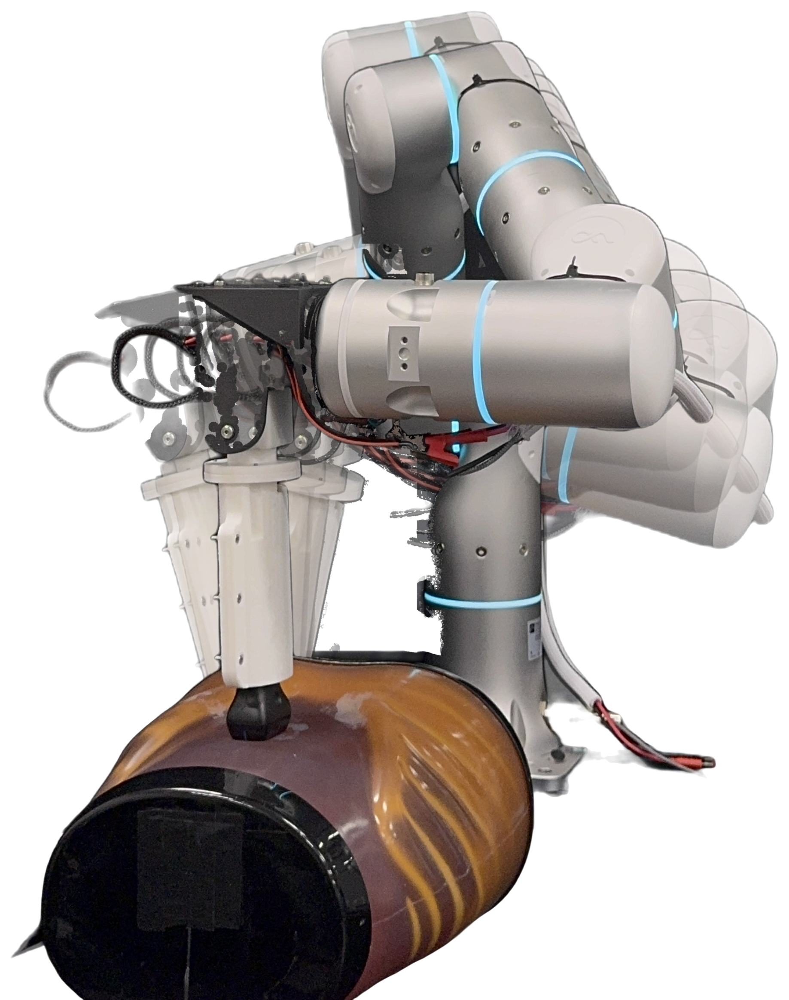
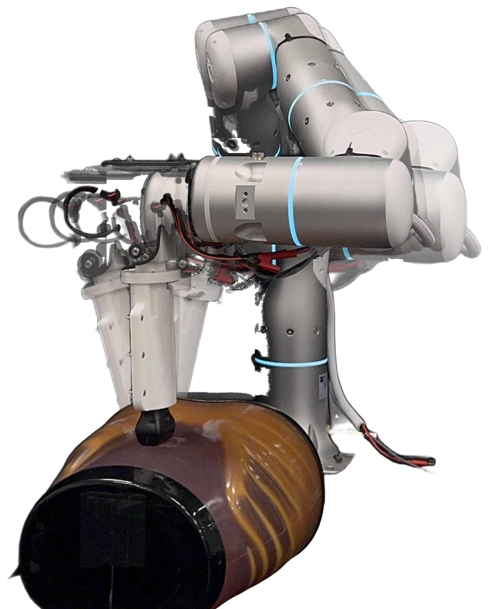
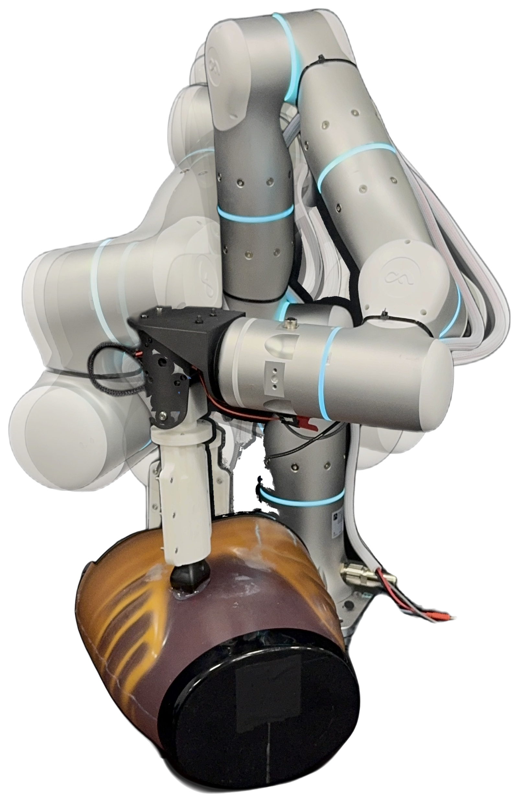
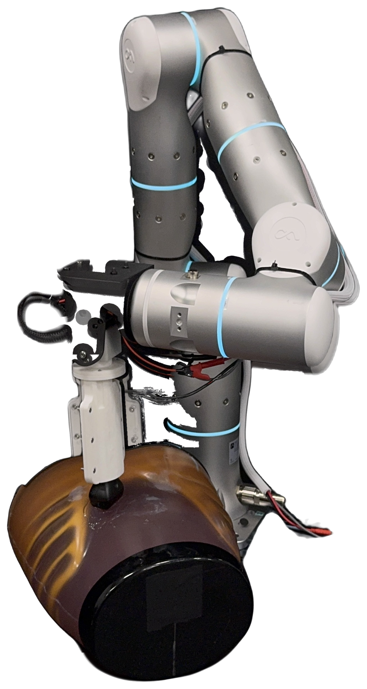
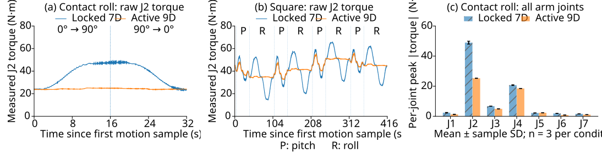
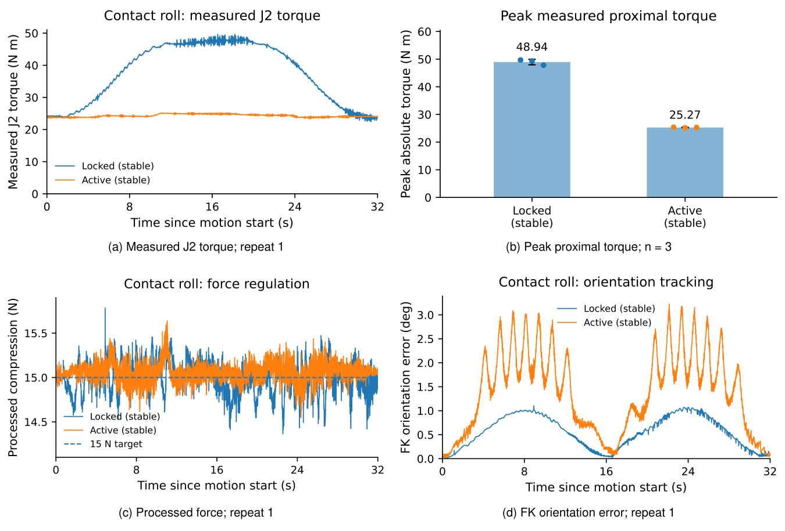

Two-DoF distal wrist · ICRA 2027 manuscript
DistalShift
How distal redundancy shapes robot arm motion and joint loading.
1 Department of Mechanical Engineering, Stanford University
·
2 Department of Modern Mechanics, University of Science and Technology of China
* Equal contribution
·
tianao@stanford.edu,
tongyuu@stanford.edu,
tongyuw@mail.ustc.edu.cn
Abstract
Seven-degree-of-freedom manipulators provide redundancy for six-dimensional tool-pose control, yet local tool reorientation can still require substantial proximal-arm motion.
We present a compact two-degree-of-freedom distal wrist that localizes tool reorientation near the endpoint. The Contact-Anchored Reorientation Envelope evaluates orientation coverage under a proximal-motion budget and supports comparisons of mounting and arrival strategies. Hardware experiments compare wrist-held and wrist-actuated configurations for ultrasound probe manipulation across five free-space and phantom-contact conditions, retaining the same installed hardware.
Wrist activation reduced mean reconstructed incremental proximal swept volume by 44.5–95.8% and baseline-subtracted torque excursion by 18.9–89.4%. During axial probe rotation in phantom contact, peak and RMS measured arm-joint torque decreased by 48.4% and 29.8%, respectively. These gains were task dependent and accompanied by increased orientation-tracking error. Complementary diagnostic simulations indicate lower whole-system absolute joint mechanical work than direct probe mounting, including the wrist joints’ contribution, despite higher proximal torque RMS.
Overview
DistalShift adds local tilt and axial rotation between a commercial 7-DoF arm and the tool. The same assembly is compared with the wrist held, so the proximal arm supplies the reorientation, and with the wrist actuated, so more of that reorientation stays near the probe.

Video
The project video walks through the 7-DoF and 9-DoF comparison, first in simulation and then on the hardware used for the ultrasound-probe tasks.
Hardware
The wrist is an add-on module between the robot flange and the tool. Joint 8 tilts the tool and joint 9 rotates it about the probe axis. In the ultrasound configuration, that axial joint is aligned with the acoustic axis. All reported hardware experiments used the transverse 90° mount. The arm, probe, and phantom stay the same when the wrist is held or actuated.
- Arm
- Flexiv Rizon 4s, seven proximal joints
- Wrist
- HighTorque HTDW-5047-36-NE and HTDW-4438-32-NE, 36:1 and 32:1
- Ranges
- ±90° at joint 8 and ±180° at joint 9
- Mass
- 720 g excluding the probe
- Tool offset
- 290.4 mm from flange to the nominal contact point
- Materials
- Markforged Onyx base and mounts; Formlabs Rigid 4000 bracket, pulley, and connector
- Probe
- Butterfly iQ+ on an ABDFAN ultrasound-training phantom
- Rates
- Local wrist control at 500 Hz; host references and logging near 100 Hz
Interactive model
Drag a link to move its joint, or use the sliders. Drag empty space to orbit, and scroll or pinch to zoom. The viewer uses the original Onshape URDF, with the same joint axes as the hardware.




Hardware recordings
Each pair shows the same class of scripted probe motion with the wrist held and with the wrist actuated. Free-space pitch and roll leave the probe off the phantom. Contact pitch keeps the probe against the phantom while the tilt follows the reference.
Free-space pitch · locked
Free-space pitch · active
Free-space roll · locked
Free-space roll · active
Contact pitch · locked
Contact pitch · active
Simulation
The same probe motion is also compared in simulation. The 9-DoF model keeps the positioning arm quieter while the distal wrist supplies the orientation change.
Simulation · 7-DoF
Simulation · 9-DoF
Reorientation coverage
The Contact-Anchored Reorientation Envelope asks which probe orientations are reachable at a fixed torso contact when proximal joint motion, joint limits, clearance, and pose tolerance are bounded. It is a kinematic capability check, not a measure of force tracking or continuous trajectory feasibility.
On the 0° assembly, sampled coverage was 6.74%, 29.90%, 71.67%, and 88.50% for locked 7-DoF, generic 9-DoF, distal-weighted 9-DoF, and the proposed arrival-aware strategy. On the 90° assembly the corresponding values were 5.15%, 34.45%, 87.21%, and 94.96%. Coverage therefore depends on how the extra joints are used and how the arm arrives, not only on adding two degrees of freedom. Proposed-method coverage was 6.46 percentage points higher for the 90° assembly.

Hardware results
Five scripted conditions compare the locked and active wrist on the same installed hardware, with three technical repetitions each. Free-space tasks are an axial 0°→90°→0° turn and a 100 mm square with midpoint pitch and corner roll. Contact tasks hold a 15 N processed-compression setpoint during axial roll or during ±15° and ±30° pitch. Swept volume is reconstructed from recorded proximal trajectories on the arm collision model. It excludes the initial occupancy and is not a direct volume measurement.
| Task | Wrist | Volume (L) | Peak (N·m) | Raw RMS (N·m) | Excursion (N·m) |
|---|---|---|---|---|---|
| Free axial | Locked | 27.28 ± 0.03 | 53.10 ± 0.07 | 18.932 ± 0.005 | 23.226 ± 0.027 |
| Free axial | Active | 1.25 ± 0.01 | 30.24 ± 0.08 | 14.322 ± 0.015 | 2.454 ± 0.052 |
| Free square | Locked | 70.84 ± 0.04 | 65.89 ± 0.10 | 19.426 ± 0.009 | 21.816 ± 0.080 |
| Free square | Active | 30.03 ± 0.09 | 56.22 ± 0.04 | 19.159 ± 0.022 | 11.691 ± 0.145 |
| Contact roll | Locked | 26.80 ± 0.05 | 48.94 ± 0.99 | 16.362 ± 0.012 | 22.491 ± 0.044 |
| Contact roll | Active | 1.13 ± 0.01 | 25.27 ± 0.09 | 11.484 ± 0.007 | 2.729 ± 0.057 |
| Contact pitch ±15° | Locked | 14.19 ± 0.02 | 57.63 ± 0.43 | 21.513 ± 0.007 | 5.490 ± 0.210 |
| Contact pitch ±15° | Active | 7.85 ± 0.01 | 55.54 ± 0.19 | 21.490 ± 0.011 | 4.450 ± 0.024 |
| Contact pitch ±30° | Locked | 27.78 ± 0.04 | 60.88 ± 0.66 | 21.651 ± 0.006 | 9.948 ± 0.039 |
| Contact pitch ±30° | Active† | 15.41 ± 0.01 | 58.90 ± 0.31 | 21.781 ± 0.007 | 7.364 ± 0.108 |
† Active ±30° contact pitch includes internal pauses. Pauses stay in the swept-volume interval and are excluded from the motion-only torque columns.


Task fidelity
The spatial and load reductions come with a tracking cost. Orientation error from arm–wrist forward kinematics was larger for the active wrist in every condition. Position error is the free-space forward-kinematics error, or the tangential error during contact. Force error is a processed flange-sensor estimate, not an independent measurement. The ±30° contact-pitch trials also contained 2.43 s of internal pauses.
| Task | Wrist | Position (mm) | Orientation (°) | Force (N) | Pause (s) |
|---|---|---|---|---|---|
| Free axial | Locked | 0.635 | 1.469 | — | 0.00 |
| Free axial | Active | 0.536 | 3.264 | — | 0.00 |
| Free square | Locked | 0.542 | 0.341 | — | 0.00 |
| Free square | Active | 1.259 | 1.423 | — | 0.00 |
| Contact roll | Locked | 0.354 | 0.657 | 0.176 | 0.00 |
| Contact roll | Active | 0.611 | 1.614 | 0.126 | 0.00 |
| Contact pitch 15° | Locked | 0.432 | 0.261 | 0.209 | 0.00 |
| Contact pitch 15° | Active | 1.108 | 0.729 | 0.206 | 0.00 |
| Contact pitch 30° | Locked | 0.614 | 0.476 | 0.605 | 0.00 |
| Contact pitch 30° | Active† | 1.596 | 1.182 | 1.059 | 2.43 |
Discussion
Distal redundancy moves reorientation toward the tool and reduces proximal motion. In the square task, proximal travel stayed similar during translation and fell during pitch and especially roll. Free-space axial rotation and contact roll also reduced measured peak and raw-RMS proximal torque. Pitch and the composite square kept the swept-volume and torque-excursion benefits with little change in raw RMS. A smaller motion envelope therefore does not, by itself, imply a comparable drop in raw joint torque.
The add-on wrist works with the arm’s existing Cartesian motion–force controller. Contact trials preserved force regulation. Larger active orientation error points to coordinated tracking and wrist–tool mounting as the next design constraints. The same-setting repetitions do not establish cross-workspace generalization, whole-system energy savings, or clinical imaging quality.
Citation
This manuscript has been submitted to the IEEE for possible publication. Copyright may be transferred without notice, after which this version may no longer be accessible.
@misc{ren2026distalshift,
title = {DistalShift: How Distal Redundancy Shapes Robot Arm Motion and Joint Loading},
author = {Ren, Tian-Ao and Wang, Tongyu and Zhao, Shixuan and Karunaratne, Rohan and Zhang, Tao and Thomasson, Rachel and Cutkosky, Mark},
year = {2026},
note = {Manuscript submitted to the IEEE for possible publication},
url = {https://ruggedizedwrist.github.io/}
}